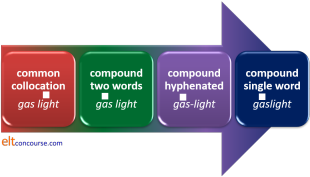
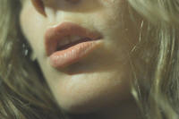
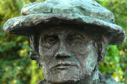

Compounding
If you have followed the guide
to word formation, you will be aware
that English makes new words in a variety of imaginative ways.
Compounding is one of them.
Here are some examples:
| candlestick | noun + noun |
| mouse-click | noun + verb |
| blackboard | adjective + noun |
| heartbeat | noun + verb |
| farfetched | adverb + participle (-ed) |
| oceangoing | noun + participle (-ing) |
| windmill | noun + noun |
All of these example are written as one word but that is not necessarily true of all compounds. For example:
| whisky distillery | noun + noun |
| bee-sting | noun + verb |
| past tense | adjective + noun |
| firing squad | participle (-ing) + noun |
| quick frozen | adjective + participle (-ed) |
| sea-green | noun + adjective |
| washing machine | noun + noun |
 |
The problem of definition |
There is no one formal criterion that can be
used for a general definition of compounds in English
(Quirk et al, 1972:1019)
And that is our problem.
Many nouns, as we shall see, can be pre-modified by other nouns
without necessarily forming what many would regard as a compound
noun. However, constant use of such formulations sees the
stress moving to the first element and forming the only stressed
syllable in the expression (a signal characteristic, if not a
defining one, of compound words).
For example, it is clear that the following result in compound
nouns:
a chair with arms = an armchair
a hanger for a coat = a coat hanger
a story about love = a love story
a meeting of a committee = a committee
meeting
and in all these cases, there is one stressed syllable only and it
falls in the first element of the compound (not necessarily the
first syllable, of course, as we see in the last example, but that is usually the way).
In other cases, the situation is much less clear and it is a matter
of choice whether certain combinations may be considered compounds
proper or just nouns pre-modified by other items. For example:
a board to select a candidate = a selection
board
a person who is both an actor and a director = an
actor-director
and in the first case, the stress falls on the second syllable of
the first item and in the second case on the second syllable of the
second item but it is not clear whether both or neither should be
considered as compounds.
A single sense |
|
| wine glass, wine-glass or wineglass |
Compounds, whether written as one word, hyphenated or as two words, represent a single sense.
They form discrete single-sense units and are treated as single lexemes grammatically. In this guide, some compounds are written as two words, some as one word and some are hyphenated. In many cases, it is the personal preference of the writer how such words are written and dictionaries often differ. You may be in the majority choosing to write teacup as one word but coffee cup as two. The senses and the way the compounds are used are parallel regardless of how you write them.
 |
Hyphenation and single words |
A further little wrinkle is that one person's compound is another person's double adjective and all double adjectives need a hyphen (we write the wine-dark sea, not the wine dark sea and the brick-built house, not the brick built house).
There is also some indication of a cline in the language as a concept becomes increasingly common and conceptualised as a single idea, for example:

When gas for domestic lighting was first introduced, it was a noun-noun collocation
with gas acting adjectivally (as a classifier or noun adjunct), but gradually, as the system became more
common, the term changed until it is now considered a single compound
lexeme.
So, initially, the stress fell on the word light (as the small
white square shows), then it moved
to the word gas, then the hyphenated form became common and
finally the one-word form of the compound became conventional as it now
is in gaslight (/ˈɡæs.laɪt/).
The same stress movement can be observed with terms such as compact
disc which, when first introduced, had the stress on disc
(because compact was an adjective, stressed on its second
syllable) but which is now a compound, stressed on the first syllable of
compact, like this: /ˈkɒm.pækt dɪsk/ not
/kəm.ˈpækt dɪsk/.
It is possible, of course, that a reverse process may occur and, because gas lighting is now uncommon, that over time the stress will move again to the second element and the word gas will function again as a classifier rather than part of a compound.
A recent example you are familiar with is the term mouseclick (a noun-verb compound making a noun) which appears to have entered the language quite rapidly. Each revision of standard dictionaries includes new compounds.
|  |
Pronunciation: stress |
Nearly all true compounds are given a
main stress on the first element and a secondary stress (if any is
present) on the second
element so we have, from the list above, e.g.:
candlestick:
/ˈkændl.stɪk/
blackboard:
/ˈblæk.bɔːd/
firing
squad: /ˈfaɪər.ɪŋ skwɒd/
etc.
What this means is that the word which determines meaning and word class
is, in fact, usually unstressed in a compound and that runs slightly
counter to people's general intuition because we usually expect
significant meaning-carrying items to carry heavier stress than others.
When we say:
My office has a green door
for example, we would expect the stress to fall on the nouns because
they are the most significant items and so it does. We get:
/maɪ.ˈɒf.ɪs.həz.ə.ɡriːn.ˈdɔː/
with the two main stresses falling on the first syllable of office
and on door.
However, there is also a word greenroom which refers to the
place where actors go when they are not on stage in the theatre and that
is a true compound so the pronunciation of:
My office is next to the greenroom
is:
/maɪ.ˈɒf.ɪs.ɪz.nekst.tə.ðə.ˈɡriːn.ruːm/
in which we still have a main stress on the first syllable of office
but the second stress in the clause now falls on the first syllable of
greenroom as the transcription shows.
(It is also noticeable that the origin of the word is reference to the
colour it was usually decorated in and in the 18th century, it was
written as two words, in the 19th with a hyphen and today it is a single
word. It is a fair bet that it was also pronounced as
/ɡriːn.ˈruːm/ when the expression was
first used. Today's greenrooms are, incidentally, all sorts of
colours.)
For more on how compounds and other words are stressed, see the guide to word stress, linked in the list of related guides at the end.
 |
Plurals |
The other obvious characteristic of compounds is that when they
are plural, the plural marker usually falls on the second element so we get,
e.g.:
beach huts not *beaches hut
child minders not *children minder
desk drawers not *desks drawer
In a lot of cases, of course, the first element is a mass noun
which can take no plural so this makes good sense and we find:
water works
sugar lumps
water board
etc.
Some noun classifiers are, however, irregularly marked for
number. We can have:
a saloon car
but
a sports car
a sports bag
but
a camera bag
a complaint form
but
a complaints department
and so on.
The way to bet is that they are singular so we have
model car collection
portrait gallery
landscape photography
and so on.
Learners who do not have parallel structures in their first
languages will often be tempted to make all noun classifiers plural.
 |
Three writing choices |
There are three ways to write compounds and much will depend on the variety of English you use, the commonness of the compound and personal choice. The three choices are:
- Solid, as one word
For example:
bedroom
paperweight
loudspeaker
bookkeeper - Hyphenated (as all double adjectives must be)
For example:
tree-felling
window-ledge
lawn-mower
paper-clip - Open, as two words
For example:
police officer
printing paper
living room
cellar bar
It is likely that anyone reading this will not agree with the list above in its entirety. Dictionaries and spell-checkers will disagree. There is no hard-and-fast rule.
|  |
Headedness |
In English, the second part of the compound usually determines two things:
- The word class
walking stick is a noun not a verb
software is a noun not an adjective
tailor-made is a participle adjective not a noun - The meaning
windmill is a type of mill not a type of wind
bus driver is a type of driver not a type of bus
police woman is a type of woman not a type of police
The nature of English also requires the right-hand element to take
any inflexion so a plural of a compound noun such as:
bank book
will fall on book, not on bank.
By the same token, any verbal inflexion for tense, aspect or derivation
will only occur if the right-hand element is a verb so we get, e.g.:
sleep walker
homemade
baby sitting
chain smokes
etc.
For this reason, English compounding is described as right-headed. The headword in the compound lies to the right. Many related, especially Germanic, languages follow the same pattern of right-headedness as does, e.g., Turkish.
Other languages do things differently.
In left-headed languages someone who drives a taxi is not a taxi
chauffeur but a chauffeur de taxi (French). In
French, a postage stamp is a timbre-poste, in Polish a
znaczek pocztowy and in Romanian a timbru poștal (stamp
postage in all cases). Other left-headed languages include
Vietnamese, Thai and Welsh.
As we would expect, inflexions for plurality affect the left-hand
element in such languages so the plural of taxi driver in
French is chauffeurs de taxi.
(This applies even to languages which usually have an adjective-noun
ordering so, for example, in Polish, the adjective precedes the noun but
the classifier follows it and
an expensive postage stamp
translates as
drogi znaczek pocztowy)
Many languages avoid compounding and will use a kind of genitive structure (a driver of buses, a stamp of postage etc.) or simply supply a different ending for someone who does something (as English can with gardener, teacher etc.) but, instead of deriving the person from the verb, they will derive the person from the noun and have taxista (Spanish) or tassista (Italian).
Headedness is an issue which can be handled with comparative language work but to be able to do that well, you need to be aware of the characteristic(s) of your learners' language(s). Headedness applies to more than compounds of course but the forms are parallel.To help:
| Right-headed | Left-headed |
|
English and most Germanic languages Scandinavian languages Japanese, Korean, Mandarin and Cantonese Turkish, Basque Most Indian languages |
Romance
languages (French, Italian, Spanish etc.) Slavic languages and Albanian South-East Asian languages (Thai, Burmese, Vietnamese etc.) Celtic languages Most African languages |
 |
Transparency |
Knowing that English is right-headed allows one to infer the meanings of many compound word because, e.g., it is clear that a doorman is a type of man, not a type of door and an ashcan is a type of can not a type of ash. This is true for thousands of compounds so simply alerting learners to the headedness of English is a worthwhile 5 minutes of classroom time.
There are times, however, when the meaning of a morpheme in a compound is not readily evident. There are, in other words, levels of transparency which we can assign to the morphemes making up the compound. For example:
- notebook
is wholly transparent: it is clearly a type of book (headedness tells us that) and in it one will find or make a note. That's a case of both parts being transparent. - passbook
is not completely transparent. It is, of course, a type of book, but the relationship and meaning of the morpheme pass is, in this case, not transparent and cannot easily be inferred.
A word such as sketchbook falls into category 1. because it is clear that it is a book containing sketches but the word cookbook is not analysable in the same way because it does not contain cooks.
A compound such as snowman, exhibits a similar problem when compared, for example, to dustman. The latter is a man who collects dust or rubbish and is, again, only partially transparent because one needs to equate dust and rubbish. The former is, however, not someone who collects, or brings, snow, it is a man made of snow. A doorman, on the other hand, is not a man made from a door. - drug-pushing
exhibits a reverse phenomenon. This is clearly connected to the meaning of drug (in illicit narcotic) but it is not clear what the pushing refers to. Understanding right-headedness will not help much here although we can infer that it refers to a type of pushing, not a type of drug. - ladybird
This is an example of doubly opaque compound because it is neither a bird nor connected particularly to ladies. The word exhibits, in the jargon, full non-compositionality and its meaning cannot be arrived at by understanding the meanings of the constituent parts.
The term gatecrasher exhibits a similar phenomenon because it has little to do with gates or crashing but describes an uninvited guest.
Types of compounds |
There are three to consider – compounds acting as nouns,
compounds acting as adjectives or adverbs and compounds acting as
verbs.
Within these categories there is, however, a good deal of diversity.
 |
Noun compounds |
| handshake |
There are three main types of these which differ structurally. It is worth analysing them carefully because it makes a good deal of sense to focus separately in the classroom on the different structures and word-class elements.
 |
Verb + Noun (or Noun + Verb) |
There are two fundamental types of these. Can you see the difference between the following pairs? Click here when you have.
| Type 1 | Type 2 |
| earthquake | dressmaking |
| washing machine | DVD-player |
| earache | window cleaner |
All of these are noun + verb or verb + noun compounds but ...
Type 1 compounds are subject + verb –
the earth quakes, the machine washes
and the ear aches.
There are three distinct types of Subject + Verb compounds:
-
subject
noun + base form of the verb
For example:
landslide, earache, toothache, sunrise, frostbite, rainfall etc.
This is a very productive group and native speakers are apt to make them up as the need arises. The last two of these exhibit some non-compositionality insofar as the terms bite and fall are opaque. -
base form of the
verb +
subject noun
For example:
driftwood, watchdog, watchmen, flashlight, tugboat, searchlight, hangman etc.
This is a far less productive group but all these examples are fully transparent. -
verb in -ing + subject noun
For example:
firing squad, working group, cleaning fluid, sticking plaster etc.
This is a moderately productive group and generally transparent in meaning although a term such as rolling tobacco is less so and would fall into transparency group 2. above.
There is a temptation, succumbed to by some website writers out here, to group all -ing form participles and nouns as compound nouns. This is not the case because:- We should be careful to distinguish between -ing
participles acting as simple adjectives and those forming real
compound nouns. For example,
dancing shoes
is a compound noun referring to shoes used for dancing and does not imply that the shoes are doing the dancing whereas,
boiling water
is water which is boiling, not water used for boiling.
The distinction is usually recognisable in the stress with compound nouns being stressed on the first element and combinations of -ing adjectives and nouns being stressed on the second element. - The other tell-tale characteristic of true compounds
vs. classified or modified nouns is the sense of a
permanent condition. For example:
a barking dog
is a dog which happens to be currently making a noise whereas:
a hunting dog
is a breed of dog used for hunting and the dog in question may be currently asleep in the sun.
Equally:
an opening door
is a door which is currently opening but
a sliding door
is a compound referring to a type of door which can slide (but is probably static at the time of talking about it).
- We should be careful to distinguish between -ing
participles acting as simple adjectives and those forming real
compound nouns. For example,
Type 2 compounds are object + verb –
the dress is made, the DVD is played and the window is cleaned.
Whether the noun precedes or follows the verb is somewhat unpredictable.
The most common way is noun first because of the nature
of right-headedness.
There are distinct groups of these, too:
- object noun + base form of the verb
For example:
haircut, handshake, tax cut, self-control etc.
This is a moderately productive category. - object noun + verb in
-ing
For example:
town planning, storytelling, brainwashing, air-conditioning etc.
This is a productive group. - object + verb + -er (i.e., the
doer)
For example:
fashion designer, songwriter, gatecrasher, window cleaner etc.
Some consider these to be noun + noun compounds and that's a point of view.
This is a productive group and native speakers are apt to make them up as the need arises. - base form of the verb + object noun
For example:
pushbutton, mincemeat, scarecrow, cutpurse etc.
This is a rarer group. - verb in -ing + object noun
For example:
cooking apple, reading exercises, parking meter etc.
Native speakers are, again, apt to make these up as they go along. - verb in -ed / -en + object noun
This is a rarer group in which the compound represents the finished state of something rather than the action performed on it. Usually, these can be alternatively analysed as classifiers + nouns and not true compounds because the stress frequently falls on the second element. However, we can find, for example:
left luggage, cut glass, spoken / written word, stolen property
which are single concepts and may be stressed on the first element.
As we saw above, to be considered compounds at all such items need to represent a permanent rather than temporary state so, for example:
fallen tree, stolen car, lost child
and so on are not compounds but phrases containing participle adjectives describing the current, not permanent, condition of a noun. Temporary state expressions like these are generally stressed on the noun.
 |
Verb + Adverbial and Verb + Noun |
These are often lumped together with the verb + noun compounds we have just looked at but there is a distinction:
- In verb + noun compounds proper, the
noun is either the subject or the object of the verb as we have
just seen so:
- When the noun is the subject, for example:
In rainfall, the compound can be expanded to have rain falls (subject noun + verb)
In turntable, the compound can be expanded to the table turns (verb + subject noun) - When the noun is the object, for
example:
In film review, the compound can be expanded to review a film (verb + object noun)
In handshake, the compound can be expanded to shake a hand (object noun + verb)
- When the noun is the subject, for example:
- In verb + adverbial compounds, the
noun is not the subject or the object of the verb but the
compounds tell us where, when or what with the verb is intended.
In other words, the compound is adverbial in nature. So:
- Where:
In waiting room, the room is not the object or subject of the verb wait, the compound tells us where the waiting takes place and can be expanded with a prepositional phrase to get wait in a room. Other examples include hiding place (hide in a place), writing desk (write at a desk) and so on. - When:
In daydream, the noun day is not the subject or object of the verb dream and the compound can be expanded to get dream in the day. - What with:
In handwriting, the noun hand is not the subject or object of the verb write and the compound can be expanded to write by hand.
- Where:
Many of these verb + adverbial compounds use a verb participle with
-ing + a noun. There
are hundreds:
printing paper, walking stick, babysitting,
sunbathing etc.
The verb may follow or
precede the noun but headedness applies so we know that walking
stick is a type of stick and that sunbathing
is a type of bathing.
Other forms use the base of the verb plus a noun (again, following
or preceding):
flashlight, daydream, homework, plaything
etc.
Most of these are countable but homework is not.
 |
Compounds without verbs |
Almost all of these are noun + noun: oil well, sawdust, painkiller,
ashtray, fire engine, shirtsleeve, motorbike, headlamp etc.
For teaching purposes, it's useful to note the large group of
compounds using containers:
matchbox, milk bottle, teacup,
coffee cup, cigarette packet etc.
and to help learners notice
that the formation with of changes the meaning:
a
teacup vs. a cup of tea
etc.
Some are adjective + noun: handyman, whiteboard, softball, hardboard, smart-board, wet room, cold room, shortstop, close fielder etc.
In most cases, the right-hand word determines meaning and word class:
printing paper is a kind of paper not a kind of printing, a
tax cut is a type of cut, not a type of tax and so on.
and babysitting is a verb (or a noun derived from the verb) and
plaything is a noun not a verb.
One oddity to note for teaching purposes concerns nouns which are
always plural or which have a significantly different meaning when
used in the singular or plural forms (also called paired nouns and pluralia
tantum respectively). Examples are:
scissors
trousers
arms (weaponry)
and so on.
When these words form part of verbless, noun + noun, compounds, they
are often (not always) made singular so we get, e.g.:
trouser press
scissor sharpener
but
arms race
 |
Adjective and adverb compounds |
| ocean-going liner |
As with noun compounds, these are often formed with an object
+ verb. For example, in
a breathtaking view
the breath is taken and in:
a firefighting
crew
the fire is fought
etc.
Other adjectives can be formed as follows:
- Adverbial + Verb
backsliding, homecoming, easy listening etc. - Noun + Adjective
homesick, travel weary, tax-free, battleship grey etc. - Adjective + Adjective
bittersweet, Franco-British, grey-green etc.
The first part of such compounds can contain a derived adjective which cannot usually stand alone.
See the guide to adjectives for a lot more on compounding to form adjectives. There are over ten ways in which this is done and they are set out in that guide.
Again, headedness means that the right-hand word determines
meaning and word class of the first two categories.
Compounded adjectives, on the other hand sometimes imply a
combination of characteristics rather than depending solely
on the right-hand element for their meaning.
sky-blue, lemon-yellow
are respectively a type of blue and a type of yellow and both are right headed
(or head final) in the normal way but
Russo-Japanese
refers to a combination of elements that are Russian and Japanese,
not just Japanese.
Compound adverbs are much rarer than compound adjectives because
an adverb form is uncommonly derivable from such adjectives.
They do exist, however, so we may encounter:
A breathtakingly beautiful sunset
A heart-stoppingly exciting film
and so on.
There is a range of adverbs now written as one word which qualify as
compound adverbs however and the list includes words such as:
thereafter, hitherto, therefore, thereby, overnight, sometimes
and a few others.
They began their careers in the language as two words usually but,
over time have been compounded and are now written as single words.
 |
Verb compounds |
| to sightsee |
Verb compounds like sightsee
are often back formations from the noun
compound (in this case sightseeing).
There are two patterns:
- object noun + verb
For example:
lip-read, flat-hunt, pen push, clock watch
In these compounds the first element is a noun which is the object, not the subject, of the verb. - noun + verb
For example
sleepwalk, chain smoke, window-shop, spring clean
These compounds are adverbial in nature because they refer not to the object of the verb but to how, when or where it occurs so we can expand them with prepositional phrases to:
walk in your sleep, smoke in a chain, shop by looking in the window, clean in the spring.
Headedness is again apparent and the second element determines
that the compound is a verb and it is the verb which carries the
central meaning.
This also means that any other word derived from such compounds is
formed by changes to the second element so we get, e.g.:
sleepwalking
window shopper
etc.
And grammatical inflexions will also affect the right-hand element
so we get:
sleepwalked
spring cleans
etc.
Bahuvrihi compounds |
|
| much rice |
This expression is derived from the Sanskrit word meaning
much rice and in that language, it means a rich person.
The defining characteristic is that the compound so formed names an
entire entity by specifying a feature of it. A rich person
owns a lot of rice.
English makes use of this form of compounding usually by referring
to a particular characteristic of the entity and the result can be a
noun (usually) or an adjective / classifier (more rarely).
Here are some examples:
bluebell (with a flower like a blue bell)
loudmouth (with a mouth which is loud)
blockhead (with a head like a block)
paperback (with a paper back)
etc.
Classifiers |
As we noted at the outset, there is a very fuzzy border between compound nouns and classified
nouns. There is a guide to classifiers, partitives and group nouns on this site, linked in the list below to which you should refer for more
information.
Briefly, a classifier, or noun adjunct in some analyses, is distinguished from an adjective by being
incapable of modification so, for example, while we can have:
an excellent student
the most excellent student
a really excellent
student
etc.
we cannot have
*a most university student
*a really university student
and so
on.
The word excellent is an adjective describing
a characteristic of the student but the word university is a
classifier which categorises the student.
It is easy to see that it is a short step from classifier + noun to true
compound nouns. Many of the examples cited above could equally
well be analysed as a classifier plus a noun so we would have, e.g.
town planning
lesson planning
route planning
garden planning
etc.
all analysable either as compounding or as classifier + noun structures.
Individual speakers will reveal how they are using some of these
expressions by where they choose to let the main stress fall. If
the speaker is considering the term as a single-sense compound, the
first item will get the stress and when the speaker assumes that the
first item simply classifies the second, there are two senses and the
stress will usually be placed on the second element.
So, for example, we may find:
What beautiful stained glass
with the stress falling on glass as in:
/ˈwɒt.ˈbjuː.təf.l̩.steɪnd.ˈɡlɑːs/
and then also find:
It's a stained-glass window
with the stress falling on the first element as in:
/ɪts.ə.ˈsteɪnd.ɡlɑːs.ˈwɪn.dəʊ/
revealing that the speaker considers the expression as classifier plus
noun in the first example and as a compound classifier in the second.
 |
Pattern summary |

 |
Coinages |
Compounding is a common way in which new words are coined and come in a variety of flavours:
- Blends
in which part of either or both words is removed and the resulting morphemes compounded as in, for example:
Oxbridge [a blend of Oxford and Cambridge]
permafrost [a blend of permanent and frost]
simulcast [a blend of simultaneous and broadcast] - True compounds
in which both words are retained and simply combined to make a third as in, for example:
bloatware [a verb-noun compound]
software [an adjective-noun compound]
helpdesk [a noun-noun compound or a verb-noun compound]
etc. - Retronyms
in which an additional classifier is seen as necessary because technology has overtaken the original meaning of a word as in, for example:
rotary telephone
valve radio
hand mower
hand drill
horse drawn carriage
and so on.
There is a good deal more on this in the guide to word formation.
| Related guides | |
| word formation | for more on how this functions |
| word stress | for more on considerations of word stress |
| classifiers, partitives and group nouns | for a guide to a connected area |
| adjectives | for more on the 10+ ways compound adjectives are formed |
| teaching word formation | for the next logical step |
Yes, there's a test.
References:
There's a good deal more on this in
Quirk, R & Greenbaum, S, 1973, A University Grammar of English, Harlow:
Longman (pages 444 et seq.)
Quirk, R, Greenbaum, S, Leech, G & Svartvik, J, 1972, A Grammar of
Contemporary English,
Harlow: Longman